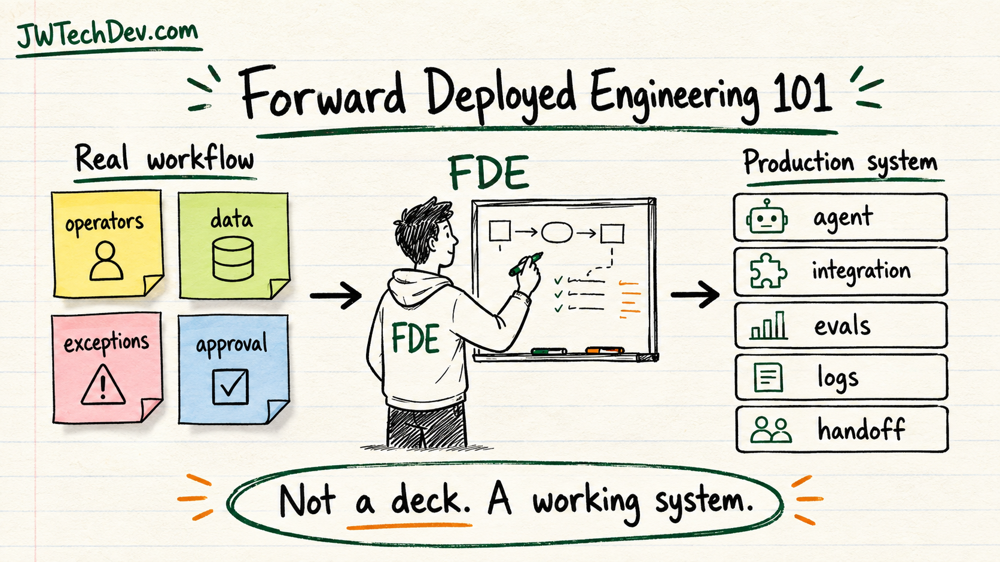

Forward deployed engineering 101
The simple version: a forward deployed engineer lives close enough to the real workflow to build the right thing, then turns that learning into production software.

Quick answer
Forward deployed engineering is what happens when software engineering moves closer to the people doing the work. Instead of building from far away and hoping the requirements were right, the engineer studies the real workflow, builds the first useful slice, deploys it, learns from usage, and turns the lesson into something the platform can reuse.
For AI and cloud builders, that matters because the hardest part is rarely the demo. The hard part is connecting messy business reality to identity, data, tools, approvals, logs, evals, and handoff.
What forward deployed engineering means
The phrase is strongly associated with companies that deploy technical teams into real customer environments. Palantir describes forward deployed engineers as working at the intersection of business, product, and engineering. OpenAI has also described deployment work as meeting teams in the field, understanding their workflows, and turning models into real products.
That is the important mental model: the FDE is not only collecting requirements. The FDE is reducing the distance between the user, the workflow, and the production system.
Why AI needs this role
AI makes demos easier and production harder. A chatbot can look impressive in a clean example, but real work includes missing data, unclear ownership, privacy boundaries, approvals, exception paths, audit logs, and users who will do unexpected things.
Forward deployed engineering helps because it starts where the workflow is real. The builder can see what the user is trying to accomplish, what data they trust, where the process breaks, who has authority to approve, and what the system needs to remember after the model responds.
What an FDE actually does
A practical FDE loop looks like this:
Discover the workflow. Watch how the work happens now. Find the inputs, outputs, handoffs, approvals, exceptions, and pain points.
Map the system boundary. Identify the data sources, tools, APIs, identities, permissions, and places where writes are allowed or blocked.
Ship a thin slice. Build the smallest useful workflow that can survive contact with real users.
Instrument the work. Add logs, metrics, evals, feedback, and review points so the team can tell whether the system is helping or guessing.
Turn field lessons into platform patterns. If the same problem appears twice, it probably belongs in a reusable component, registry, template, runbook, or product capability.
Why this is not just consulting with code
Consulting can produce advice, analysis, workshops, and implementation support. Forward deployed engineering should produce a working system and reusable product learning.
The difference is ownership of the technical loop. The FDE is close enough to understand the workflow, technical enough to build the system, and product-minded enough to ask, "What should the platform learn from this?"
Skills to build
If you want to grow into this lane, do not only study one tool. Build the stack of skills that lets you translate between people and systems.
Start with product thinking, workflow mapping, APIs, cloud fundamentals, IAM, data modeling, basic security, observability, evaluation, and clear technical writing. Then practice explaining tradeoffs without hiding behind jargon.
For AI work specifically, add prompt design, retrieval patterns, tool calling, agent boundaries, human approval gates, and evals. The goal is not to sound futuristic. The goal is to make useful systems that people can trust.
A beginner project
Build a small workflow that feels like real FDE work:
Create an intake form for a messy request. Route it into a queue. Let an AI assistant draft a recommendation using approved context. Require human approval before any write action. Log the decision, the source inputs, the final output, and the owner. Then publish a short runbook explaining the workflow, permissions, failure modes, and rollback path.
That one project teaches the core muscle: real workflow, constrained automation, traceability, and handoff.
Bottom line
Forward deployed engineering is becoming more important because AI systems need more than clever prompts. They need builders who can stand between real work and production software, understand both sides, and turn messy workflow truth into durable systems.
Not a deck. A working system.
Sources checked
Want the starter kit?
Grab the free JWTechDev.com starter kit if you want a practical way to connect cloud basics, AI workflows, and approval gates.
Get resources